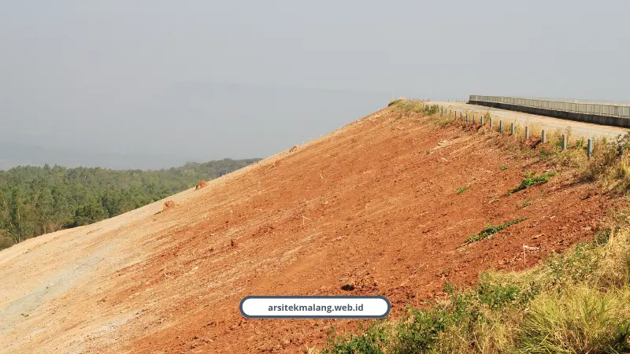

Ringkasan Inti
- Paket jasa arsitek lengkap mengintegrasikan konsep denah 2D, render 3D, DED arsitektur, gambar struktur, MEP, RAB, hingga berkas PBG dalam satu alur kerja harmonis.
- Didukung arsitek berlisensi STRA IAI dengan pengalaman 10+ tahun, portofolio 150+ proyek di Malang Raya, kepuasan klien 98%, serta garansi struktur 100%.
- Mencegah risiko pembongkaran dinding, ketidakcocokan posisi kolom-balok, dan anggaran membengkak akibat gambar kerja yang dirancang terpisah-pisah.
- Solusi adaptif khusus kontur tanah miring dan iklim sejuk Malang Raya melalui pendekatan split-level, retaining wall, dan gaya tropis modern minimalis.
Daftar Isi Artikel
- Kenapa Bangun Rumah di Malang Butuh Paket Jasa Arsitek Terpadu?
- Apa Saja yang Didapat dalam Paket Jasa Arsitek Lengkap?
- Berapa Harga Paket Arsitek di Malang?
- Bagaimana Arsitek Menangani Lahan Miring dan Iklim Malang?
- Siapa yang Cocok Memakai Paket Jasa Arsitek Lengkap?
- Kenapa Tim Bersertifikat IAI Bikin Bedanya Terasa?
- Apa Kata Klien yang Sudah Membangun Bersama Arsitek Malang?
- FAQ (Pertanyaan Sering Diajukan)
Paket jasa arsitek lengkap berisi layout denah, visual 3D, gambar kerja DED, gambar struktur, MEP, RAB, dan berkas PBG dalam satu alur. Arsitek Malang menyediakan seluruhnya dengan garansi struktur 100%, melayani Kota Malang, Kota Batu, dan Kabupaten Malang.
Di bawah ini saya bedah isi tiap tahapnya, kisaran biayanya, dan alasan paket terpadu bikin proyek bangun rumah jauh lebih tenang.
Kenapa Bangun Rumah di Malang Butuh Paket Jasa Arsitek Terpadu?
Karena kontur tanah, iklim sejuk, dan aturan PBG di Malang membuat desain setengah jadi gampang berujung bongkar-pasang. Paket terpadu menyatukan semua gambar dalam satu alur, jadi tidak ada bagian yang saling bertabrakan.
Arsitek Malang sudah berpengalaman lebih dari 10 tahun dan menyelesaikan 150+ proyek di Malang Raya. Tingkat kepuasan kliennya 98%, dan setiap karya dilindungi garansi struktur 100%.
Pola yang sering saya temui selalu mirip. Tanah baru dibeli di Sawojajar atau Pakis, gambar denah dibuat seadanya, lalu pondasi salah hitung dan dinding dibongkar di bulan ketiga.
Tiga masalah yang biasanya muncul kalau gambar dibuat terpisah-pisah:
- Denah tampak cantik, tetapi posisi kolom dan balok tidak cocok dengan struktur.
- Anggaran melebar karena tidak ada RAB rinci sejak awal.
- Pengajuan PBG tertunda karena gambar belum memenuhi standar verifikasi portal SIMBG.
Melayani Kota Malang, Kota Batu, Kepanjen, Lawang, Dau, Karangploso, Sukun, Lowokwaru, Kedungkandang, Pakis, hingga seluruh area Malang Raya.

Apa Saja yang Didapat dalam Paket Jasa Arsitek Lengkap?
Ada tujuh komponen: konsep dan layout denah 2D, visual 3D fotorealistik, gambar kerja arsitektur DED, gambar struktur, MEP, RAB, dan berkas PBG. Ketujuhnya dikerjakan berurutan supaya saling menguatkan.
- Konsep dan layout (denah 2D): penataan sirkulasi udara, cahaya, dan tata ruang yang dipersonalisasi.
- Visual 3D rendering fotorealistik: gambar eksterior dan interior sebagai gambaran hasil akhir.
- Gambar kerja arsitektur (DED): tampak, potongan, pola lantai, plafon, kusen, dan detail fasad.
- Gambar kerja struktur: penulangan pondasi, kolom, sloof, dan pembalokan.
- MEP: instalasi titik lampu, saklar, air bersih, air kotor, dan drainase.
- RAB: rincian biaya transparan tanpa biaya tersembunyi.
- Berkas PBG: dokumen teknis untuk percepatan izin lewat portal SIMBG.
Tahap 1 dan 2: Layout Denah dan Visual 3D
Layout menata sirkulasi udara, cahaya, dan ruang sesuai kebiasaan keluarga Anda. Setelah itu, render 3D eksterior dan interior menunjukkan hasil akhir sebelum ada biaya konstruksi yang keluar.
Klien yang masih ragu soal render biasanya kami ajak melihat dulu isi paket visual arsitek, mulai dari tampak luar sampai suasana ruang dalam.
Tahap 3 dan 4: Gambar Kerja dan Gambar Struktur
Gambar struktur merancang penulangan pondasi cakar ayam atau bored pile, kolom, sloof, dan balok yang aman untuk kontur tanah Malang. Gambar kerja arsitektur menerjemahkan desain menjadi ukuran yang bisa dipakai tukang.
Berkas ini terlihat rumit di awal, tapi pemilik rumah awam pun bisa belajar membacanya lewat panduan cara membaca DED yang kami siapkan.
Tahap 5 sampai 7: MEP, RAB, dan Berkas PBG
RAB memerinci biaya tanpa biaya tersembunyi, sehingga risiko budget overrun ditekan sebelum tukang datang. MEP mengatur titik lampu, saklar, dan saluran air agar tidak ada bongkar dinding belakangan.
Terakhir, dokumen teknis PBG disusun supaya pengajuan lewat portal SIMBG Pemkot atau Pemkab Malang lebih cepat.
Catatan Arsitek Malang
Jangan pernah memisahkan perancangan denah arsitektur dengan kalkulasi struktur. Pada wilayah Malang yang memiliki variasi kemiringan lereng dan beban gempa, integrasi gambar DED bersama skema penulangan sloof serta pondasi cakar ayam atau bored pile merupakan syarat mutlak agar verifikasi SIMBG lancar dan biaya konstruksi terkendali tanpa risiko pembongkaran di lapangan.
Berapa Harga Paket Arsitek di Malang?
Harga paket arsitek di Malang umumnya dihitung per meter persegi atau persentase RAB, dan di Arsitek Malang nilainya disesuaikan dengan luas serta kompleksitas bangunan. Skemanya transparan, dari Basic sampai Full Service.
Sebagai gambaran pasar, tarif paket desain di Malang tercatat mulai Rp 25.000 sampai Rp 175.000 per meter persegi, atau sekitar 5% sampai 8% dari RAB. Rentangnya lebar karena kelengkapan dokumennya berbeda-beda.
Selisih tiap jenjang paling mudah dilihat lewat ulasan tentang perbedaan paket basic dan premium, lengkap dengan output masing-masing.
Tiga hal yang paling menentukan biaya:
- Luas bangunan yang akan dirancang.
- Kompleksitas desain, termasuk kontur lahan dan kebutuhan struktur.
- Kelengkapan dokumen yang diambil, dari Basic sampai Full Service.
Bagaimana Arsitek Menangani Lahan Miring dan Iklim Malang?
Lahan miring ditangani dengan split-level, dinding penahan tanah, dan perhitungan pondasi khusus. Iklim sejuk Malang dijawab dengan gaya tropis modern minimalis yang membuat rumah adem tanpa bergantung penuh pada AC.
- Dau, Sengkaling, dan Batu: split-level dan retaining wall untuk menahan tanah dari risiko longsor.
- Pondasi cakar ayam atau bored pile: dihitung sesuai kontur tanah dan risiko gempa.
- Bukaan dan sirkulasi: udara serta cahaya alami diatur sejak denah pertama.
Untuk rumah lama, termasuk di kawasan kolonial seperti Ijen, gambar kerja menentukan titik kolom dan balok baru sebelum tambah lantai. Struktur lama tetap aman, gayanya bisa naik kelas.
Siapa yang Cocok Memakai Paket Jasa Arsitek Lengkap?
Pemilik lahan yang ingin membangun atau merenovasi dengan hasil aman, legal, dan sesuai anggaran. Paket ini dirancang untuk lima kelompok pembaca berikut.
- Pemilik lahan dan pembangun rumah pertama di Lowokwaru, Sawojajar, Sukun, Kedungkandang, atau Pakis.
- Pemilik lahan berkontur di Dau, Sengkaling, dan Batu.
- Investor kost, kafe, ruko, dan villa yang mengejar balik modal cepat.
- Pemilik rumah lama yang ingin renovasi total atau tambah lantai.
- Warga yang belum paham perizinan PBG dan SIMBG.
Kenapa Tim Bersertifikat IAI Bikin Bedanya Terasa?
Karena rancangan dikerjakan arsitek bersertifikat IAI dengan lisensi STRA IAI, sehingga standar profesi dan tanggung jawab teknisnya jelas. Di Arsitek Malang, tiga orang memegang kendali utama.
- Elias Vance, Kepala Arsitek: desainer dengan pengalaman lebih dari 20 tahun untuk estetika dan tata ruang fungsional.
- Sarah Chen, Manajer Proyek: memastikan eksekusi tepat waktu dari cetak biru hingga tahap akhir.
- Marcus Thorne, Kepala Rekayasa dan Struktur: menjamin kekuatan, keamanan, dan integritas teknis bangunan.
Apa Kata Klien yang Sudah Membangun Bersama Arsitek Malang?
Klien menyebut Arsitek Malang responsif, tepat waktu, dan transparan soal RAB. Berikut empat ulasan yang kami terima.
“Hasil desain rumah kami sangat memuaskan! Tim Arsitek Malang sangat responsif dan memahami keinginan kami. Pembangunan selesai tepat waktu sesuai jadwal.”
— Budi Santoso, Pemilik Rumah, Malang
“Proyek kantor kami selesai dengan kualitas luar biasa. Transparansi RAB dan laporan progres berkala membuat kami tenang selama proses pembangunan berlangsung.”
— Rizky Hermawan, Manager, PT Maju Bersama
“Renovasi rumah lama kami menjadi tampak modern seperti rumah baru! Tim sangat profesional, cepat, dan harga kompetitif. Sudah 3 tahun dan kualitasnya tetap terjaga.”
— Maya Sari, Pemilik Rumah, Batu
“Rekomendasi arsitek terbaik di Malang! Konsultasi gratis sangat membantu, tim desain memahami kebutuhan dengan baik, dan hasil akhir melebihi ekspektasi kami.”
— Andi Pratama, Pengusaha, Malang
Paket jasa arsitek lengkap dari layout sampai gambar struktur menutup celah yang biasanya bikin proyek bengkak dan molor. Tujuh komponennya bekerja sebagai satu sistem, bukan potongan lepas.
Kalau lahan Anda sudah siap, pesan paket jasa arsitek langsung lewat halaman layanan kami dan dapatkan konsultasi gratis.
Bisa juga lewat WhatsApp +62 889-8964-3555 atau kunjungi arsitekmalang.web.id. Melayani Kota Malang, Kota Batu, dan Kabupaten Malang.
FAQ (Pertanyaan Sering Diajukan)
Apakah paket jasa arsitek sudah termasuk pengurusan PBG?
Ya. Paket lengkap Arsitek Malang menyertakan penyusunan berkas legalitas PBG agar pengajuan lewat portal SIMBG Pemkot atau Pemkab Malang lebih cepat.
Apakah paket arsitek bisa untuk lahan miring?
Bisa. Gambar struktur Arsitek Malang memperhitungkan split-level, dinding penahan tanah, dan pondasi khusus untuk lahan berkontur di Dau, Sengkaling, dan Batu.
Apakah bisa konsultasi dulu sebelum memesan paket?
Bisa. Arsitek Malang menyediakan konsultasi gratis lewat WhatsApp +62 889-8964-3555 untuk membahas kebutuhan dan kisaran paket.
Konsultasikan Paket Jasa Arsitek Impian Anda
Diskusikan kebutuhan tata ruang, gambar 3D DED, dan pengurusan legalitas PBG bersama tim ahli berlisensi IAI Arsitek Malang.

Naura Regyna Putri
Penulis & Tim Riset Arsitektur Maroon Arsitek Malang, spesialis legalitas PBG/SIMBG, perencanaan tata ruang terpadu, dan estimasi biaya konstruksi.